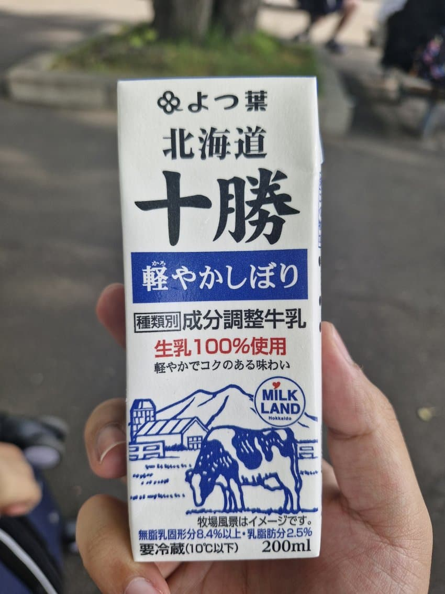
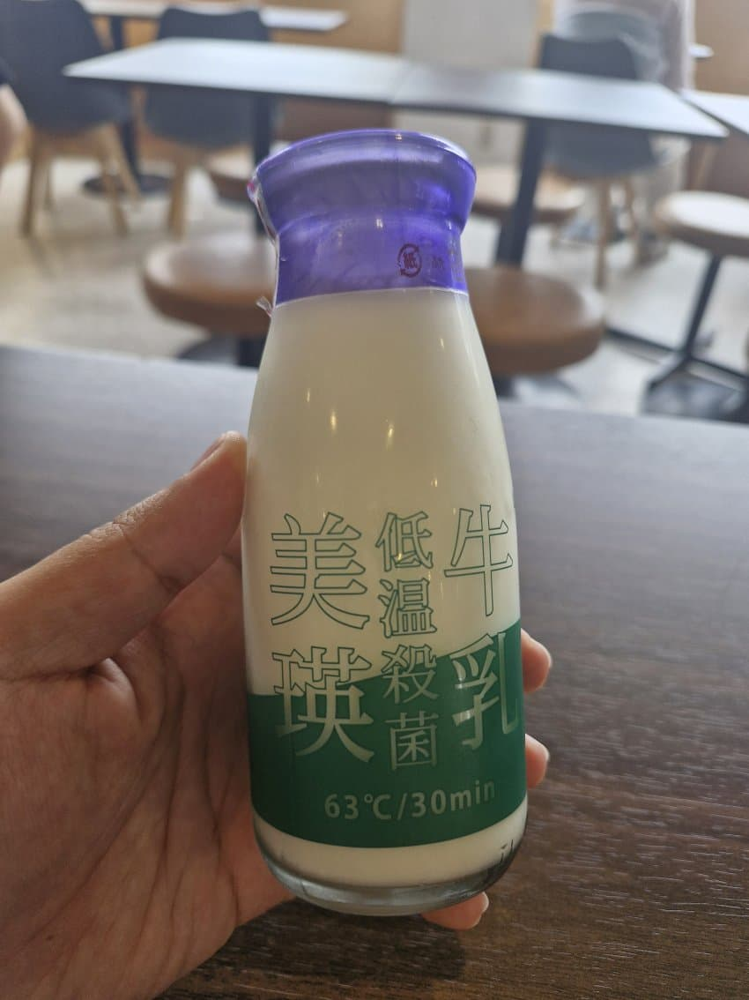

요츠바 우유(파란색)
아몬드같은 고소함
스타트가 좋다

혀에 지방의 끈적하고 고소한 느낌이 남음
근데 피니시에 누린내가 확 받침

사와야카 우유
딸기 향?이 난다
아스나로 우유
건초 냄새, 분유, 우유 비린내
후라노 우유
고소한데 누린내가 좀 남
홋카이도 4.0 우유
고소하고 혀에 끈적하게 남음
요츠바 우유(초록색)
앞선 파란색 요츠바 우유와 마찬가지로
유지방의 고소함이 맛있다
8천원짜리라 그런가...압도적인 맛이다
우유의 고소하고 풍부한 맛이 마치 물소우유 속에서 카이막 건져올리는 장면이 연상됨
가성비 1등: 요츠바 우유
가격 제외 기준으로 1등: WILD MILK
유지방이 많은 편이라 그런가 누린내가 받치는 느낌이 드는 우유도 있었지만 전체적으로 확실히 고소하고 맛있긴 함
근데 서울우유도 맛있음 ㅇㅇ
p.s. 병우유는 갬성효과가 좀 있는 듯
쫄깃한 식감에 짠맛은 과하지 않아 고소함 강하게 느껴짐 우유의 풍미가 기분 좋음
겉부분의 흰껍질에서 정1액 향이 남 십
안에 치즈는 쫄깃하고 약간 끈적한 느낌에 고소하고 짭짤한 맛인데
겉부분 향 때문에 입 속에서 묘한 비릿함과 풀 향이 진동을 함..
피니시는 씁쓸하다
댓글 17개